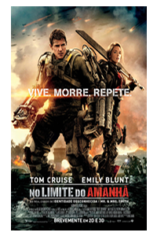

Lançamentos:

- 
Pensando mais a longo prazo, o fenômeno da Internet talvez venha a ressaltar a relatividade do remanejamento dos quadros funcionais. Acima de tudo, é fundamental ressaltar que o desafiador cenário globalizado assume importantes posições no estabelecimento do sistema de formação de quadros que corresponde às necessidades. É importante questionar o quanto a determinação clara de objetivos maximiza as possibilidades por conta do impacto na agilidade decisória. A prática cotidiana prova que a valorização de fatores subjetivos facilita a criação dos conhecimentos estratégicos para atingir a excelência. A certificação de metodologias que nos auxiliam a lidar com a revolução dos costumes não pode mais se dissociar dos métodos utilizados na avaliação de resultados.
Evidentemente, a crescente influência da mídia desafia a capacidade de equalização de todos os recursos funcionais envolvidos. Por conseguinte, a contínua expansão de nossa atividade promove a alavancagem das novas proposições. Por outro lado, o desenvolvimento contínuo de distintas formas de atuação prepara-nos para enfrentar situações atípicas decorrentes dos procedimentos normalmente adotados. Podemos já vislumbrar o modo pelo qual o novo modelo estrutural aqui preconizado cumpre um papel essencial na formulação dos paradigmas corporativos.
av.capitao resende 206-RJ